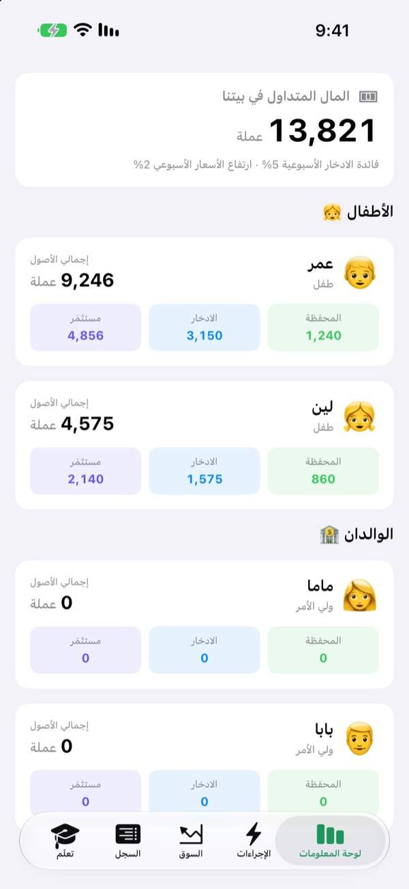
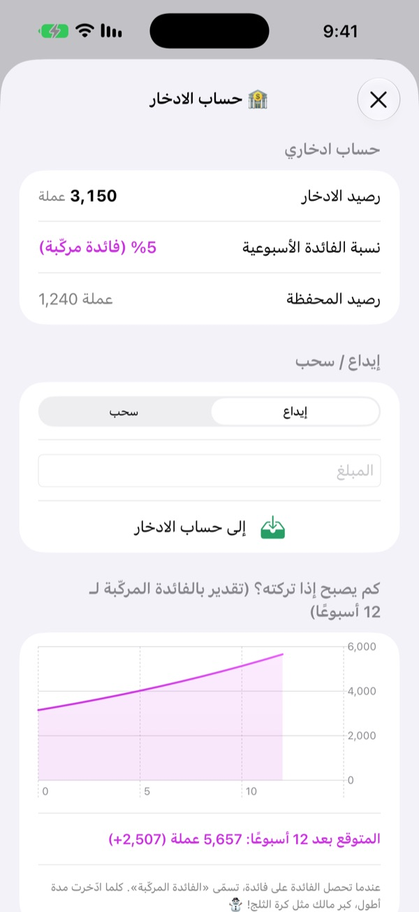
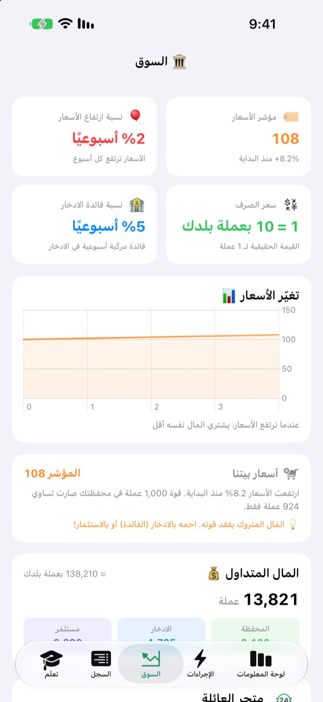
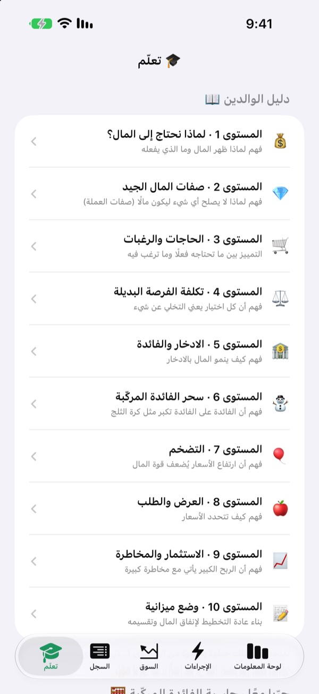

اجعل يوم المصروف
درسًا في المال
تصبح أنت البنك المركزي للعائلة، ويصبح أطفالك العملاء. يأخذون مصروفهم بعملة عائلتكم، ويشترون الحلوى، ويرون مدّخراتهم تكبر كل أسبوع، ويعيشون صعود الصندوق التجريبي وهبوطه.
الميزات الأساسية مجانية، ولا يُستخدم أي مال حقيقي.

أين تضع 1,000 عملة؟
الـ 1,000 عملة نفسها في المحفظة وفي حساب الادخار وفي ثلاثة صناديق. تقدّم أسبوعًا بعد أسبوع وشاهد ما يحدث لكل منها، بالقواعد نفسها التي في التطبيق.
هل يفهم الطفل حقًا أن «ما تدّخره يكبر»؟
الفائدة والنمو المركّب والتضخم تبدو أبعد كلما شرحتها أكثر. في مصروف سوكسوك يكسب الأطفال المال وينفقونه وينتظرونه بأنفسهم. وحين يرون أن مدّخرات الأسبوع الماضي كبرت، يذهب المصروف التالي مباشرة إلى حساب الادخار.
الصبر يؤتي ثماره
المال في حساب الادخار يكبر كل أسبوع بنمو مركّب. أنت تحدد النسبة، ويُظهر رسم بياني كم سيصبح بعد 12 أسبوعًا إذا تُرك.
فاتتك أيام؟ عند فتح التطبيق تُحسب كل الأسابيع الفائتة دفعة واحدة.

شاهد الأسعار تأكل من المحفظة
يجمع تبويب السوق مؤشر أسعار العائلة ونسبة التضخم ونسبة الادخار والمال المتداول وأسعار الصناديق في شاشة واحدة. ومع ارتفاع الأسعار يوضح كم صار يشتري أقلَّ ما في المحفظة.
يرى الأطفال بالأرقام أن المال المتروك يضعف، وأن المال المدّخر أو المستثمر يصمد.

عشرة أحاديث تجمعكم
دليل للوالدين من عشرة مستويات، من لماذا نحتاج إلى المال إلى الحاجات والرغبات، وتكلفة الفرصة البديلة، والادخار، والنمو المركّب، والتضخم، والاستثمار والمخاطرة، ووضع الميزانية.
وتتيح حاسبة النمو المركّب وحاسبة تجربة الأسعار أن تغيّر الأرقام وترى النتيجة.

ثلاث خطوات للبدء
- 1
سمِّ عملتكم
نجمة أو لؤلؤة أو عملة، أي اسم تحبه عائلتك.
- 2
حدّد رمز الوالدين
أربعة أرقام. لا يعطي المصروف ولا يغيّر إعدادات البنك إلا من يعرفه.
- 3
أضف عائلتك
أضف الأطفال والوالدين، وأعطِ المصروف الأول، وانطلقوا.
أين تجد كل شيء
- لوحة المعلومات
- محفظة كل فرد وادخاره واستثماره في نظرة واحدة
- الإجراءات
- إعطاء المصروف أو خصمه، باركود الغرض، إضافة غرض، دعوة طفل، وضع هاتف الطفل، إعدادات البنك (يلزم رمز الوالدين)
- السوق
- مؤشر الأسعار، نسبة التضخم، سعر الصرف، نسبة الادخار، المال المتداول، أسعار الصناديق
- السجل
- كل حركة للمال حسب التاريخ أو الفرد أو النوع
- تعلّم
- دليل الوالدين في عشرة مستويات، حاسبة النمو المركّب، حاسبة تجربة الأسعار
- 🐢 صندوق السلحفاة الثابت
- تقلبات يومية صغيرة وصعود بطيء وثابت
- 🐰 أسهم الأرنب للنمو
- يصعد وينزل لكنه ينمو
- 🚀 أسهم الصاروخ المغامرة
- قد يرتفع كثيرًا وقد يهبط كثيرًا
يبدأ التطبيق بنسبة ادخار 5% أسبوعيًا وتضخم 2% أسبوعيًا. غيّرهما من وضع الوالدين في إعدادات البنك. اجعل التضخم 0% لتبقى الأسعار ثابتة.
الميزات الأساسية مجانية
مجاني
- عملة خاصة بعائلتك ووضع للوالدين مقفل برمز
- حتى طفلين و10 أغراض في متجر العائلة
- إعطاء المصروف وخصمه، والدفع في متجر العائلة
- حساب ادخار ينمو كل أسبوع بنمو مركّب
- ثلاثة صناديق تجريبية مع رسوم العائد
- تبويب السوق وسجل معاملات بالتاريخ
- دليل الوالدين في عشرة مستويات وحاسبتان
- وضع هاتف الطفل
Plus · Pro
- Plus: أطفال وأغراض بلا حدّ، ومنتجات استثمار خاصة بك
- Pro: كل ما في Plus مع الدفع بالباركود وتجربة ارتفاع الأسعار ومزامنة iCloud بين الأجهزة
كل خطة متاحة باشتراك أسبوعي أو شهري أو سنوي، أو بشراء واحد مدى الحياة. الإكراميات منفصلة ولا تفتح أي ميزة.
بلا إعلانات. المشتريات داخل وضع الوالدين فقط، فلا يرى أطفالك أي زر شراء.
أسئلة
هل يُستخدم مال حقيقي؟
لا. العملة وكل المعاملات في التطبيق افتراضية وللتعلّم فقط، ولا يتصل شيء منها بحساب بنكي أو بطاقة أو نقد حقيقي.
كيف نرى الدفتر نفسه على هاتف طفلي؟
مزامنة iCloud جزء من Pro. الأجهزة المسجّلة بحساب iCloud نفسه تُبقي دفتر العائلة متطابقًا تلقائيًا. تأكد من تشغيل iCloud في الإعدادات ثم حساب Apple ثم iCloud. ومن «دعوة طفل» في تبويب الإجراءات يمكنك إنشاء دعوة برمز QR تمسحها كاميرا طفلك. بدون iCloud تبقى البيانات على ذلك الجهاز وحده.
ما وضع هاتف الطفل؟
يحوّل هاتف طفلك إلى شاشة خاصة به. لا يرى إلا محفظته واستثماره وسجله ودروسه، ويلزم رمز الوالدين للخروج منه.
نسيت رمز الوالدين.
الرمز محفوظ على الجهاز فقط، فلا يستطيع حتى المطوّر استعادته. حذف التطبيق وتثبيته من جديد يتيح البدء من الإعداد، لكنه يمحو بياناتك الحالية أيضًا.
كيف يعمل نمو الادخار؟
تُضاف كل أسبوع نسبة مركّبة إلى رصيد الادخار تلقائيًا. أنت تحدد النسبة في وضع الوالدين، والأسابيع التي مرّت تُحسب عند فتح التطبيق في المرة التالية. يسمّيها التطبيق «فائدة» لأنها الكلمة التي يتعلمها الطفل في دروس المال.
هل أسعار الصناديق مرتبطة بالسوق الحقيقي؟
لا. أسعار الصناديق بيانات تجريبية تتغير مرة في اليوم داخل التطبيق. كلما كان الصندوق أجرأ كانت تقلباته أكبر. وهي ليست منتجات مالية حقيقية.
لماذا ترتفع الأسعار؟
ليشعر الأطفال بالتضخم، يرتفع مؤشر أسعار العائلة قليلًا كل أسبوع. غيّر النسبة أو اجعلها 0% لإيقافه من وضع الوالدين في إعدادات البنك. ورفع أسعار الحلوى والألعاب في متجر العائلة معه يرسّخ الدرس. ارتفاع الأسعار جزء من Pro.
كيف أحذف كل شيء؟
حذف التطبيق يزيل البيانات المحفوظة على الجهاز. أما البيانات المتزامنة مع iCloud فاذهب إلى الإعدادات ثم حساب Apple ثم iCloud ثم إدارة التخزين واحذف بيانات التطبيق.
هل تُرسل معلومات عائلتي إلى أي مكان؟
لا. لا يوجد تسجيل، وكل البيانات تبقى على جهازك وفي حساب iCloud الخاص بك. لا يصل المطوّر إلا ما ترسله بنفسك من ملاحظات من وضع الوالدين، مع إحصاءات استخدام مجهولة الهوية وتقارير الأعطال.
على أي أجهزة يعمل؟
على iPhone بنظام iOS 17.0 أو أحدث.
أسئلة أو أعطال أو أفكار؟ راسلنا على leeo@kakao.com. ذكرُ طراز جهازك وإصدار iOS يساعدنا على الرد أسرع.